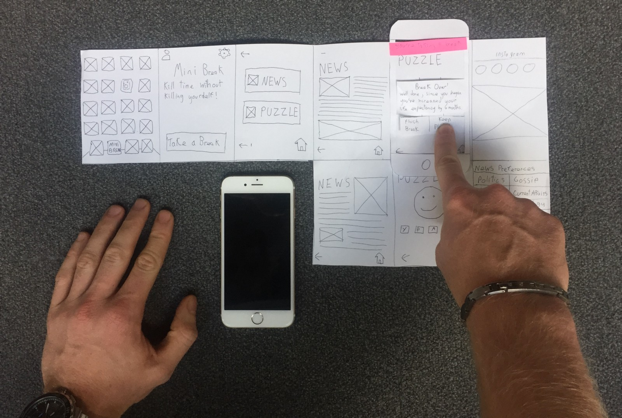

Dylan.Flowers
UX designer
I would love to make a little change in everybody's life. It doesn’t matter weather it’s big or small as long as the solution is right. When I ask the world for a coffee and a chat, I believe the world will be interested.
This is why I am a T shaped UX designer with a speciality in visual design & typography
Feel free to contact me if your interested in what I do or just want to have a game of snooker.
My Work:

Taking Online Shopping to the Edge
Kus Visual Website
Kill Time Without Killing Yourself
How I designed an app that gives ex-smokers their little moments of freedom back.
This was a one week research project exploring how deep one explore a specific user's needs. After meeting my user heavy interviews were conducted to analyse every aspect of the user's life. One major pain area that kept appearing was that she had recently given up smoking and was feeling a lack of satisfaction with her new lifestyle.
After deep analysis, iteration and critique a paper prototype for ‘Mini Break’ was developed. Mini Break is an app designed to fill the space that would normally be used having a smoke break. It recognizes that in this hectic world taking small moments to yourself can have a huge impact on stress. The app sets a timer for 6 minutes (the average time to smoke a cigarette) then gives the user content they can use to occupy themselves, they also have the choice to browse the rest of their phone while the timer goes on in the background.
I believe this app has a possible future in the service industry. It is common knowledge that ‘smokers get all the breaks’, this has the potential to level the playing field. An employer could feasibly give out a chosen number of breaks per shift that employees could call upon at any time whether they are a smoker or not.
Overall his app has huge potential to help reduce stress in a healthy manor.
Taking Online Shopping to the Edge

How I created a prototype to revolutionize the way customers buy their sports products.
Edge Sporting Goods is a grassroots sports store located near liverpool street station. They are very proud of their niche highly curated stock and expert knowledge. Founded in 1998 they have been successful as a brick and mortar store but would like to bring the business into 2017 by creating an ecommerce store to compliment the shop.
I was asked to undertake this challenge by prototyping part of the site to explore how they can can bring the strengths of their business online without loosing their “small shop” appeal.
The project focussed heavily on rapid prototyping and user testing to constantly gain insight. With every test the usability and business interests of the site were assessed. The result was a wireframe prototype for Edge Sport that exploited their expert knowledge and small shop appeal. This was done through a variety of ways but the most innovative being a video shopping experience where the shop staff can show off their bespoke advice.

In a market that Amazon dominates a unique way that the little guy can compete has been developed, as a result of rapid ideation and testing.